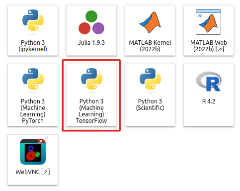

Neural Networks with TensorFlow#
TensorFlow is a free end-to-end open-source software library for data flow and differentiable programming across many tasks. It is a symbolic math library, used primarily for machine learning applications. It has a comprehensive, flexible ecosystem of tools, libraries and community resources.
Please check the software modules list via
marie@compute$ module spider TensorFlow
[...]
to find out, which TensorFlow modules are available on your cluster.
On ZIH systems, TensorFlow 2 is the default module version. For compatibility hints between TensorFlow 2 and TensorFlow 1, see the corresponding section below.
We recommend using the clusters Alpha and/or Capella when working with machine
learning workflows and the TensorFlow library. You can find detailed hardware specification in our
Hardware documentation.
Available software may differ among the clusters.
TensorFlow Console#
On the cluster Capella, load the module environment:
marie@capella$ module load release/24.04
Alternatively you can use release/24.10 module environment, where the newest versions are
available
marie@capella$ module load release/24.04 GCC/12.3.0 OpenMPI/4.1.5
Modules GCC/12.3.0, OpenMPI/4.1.5 and 14 dependencies loaded.
marie@capella$ module load TensorFlow/2.15.1-CUDA-12.1.1
Module TensorFlow/2.15.1-CUDA-12.1.1 and 47 dependencies loaded.
marie@capella$ module avail TensorFlow
-------- /software/modules/genoa/r24.04/all/MPI/GCC/12.3.0/OpenMPI/4.1.5 ---------
TensorFlow/2.15.1-CUDA-12.1.1 (L)
-------- This is a list of module extensions. Use "module --nx avail ..." to not show extensions. ---------
TensorFlow (E) tensorflow-estimator (E)
These extensions cannot be loaded directly, use "module spider extension_name" for more information.
Where:
L: Module is loaded
E: Extension that is provided by another module
*Module: Some Toolchain, load to access other modules that depend on it
>Module: Recommended toolchain version, load to access other modules that depend on it
This example shows how to install and start working with TensorFlow using the modules system.
marie@capella$ module load TensorFlow
Module TensorFlow/2.15.1-CUDA-12.1.1 and 47 dependencies loaded.
Now we can use TensorFlow. Nevertheless, when working with Python in an interactive job, we recommend using a virtual environment. In the following example, we create a python virtual environment and import TensorFlow:
!!! example
```console
marie@capella$ ws_allocate -F horse python_virtual_environment 1
Info: creating workspace.
/data/horse/ws/python_virtual_environment
[...]
marie@capella$ which python #check which python are you using
/software/genoa/r24.04/Python/3.11.3-GCCcore-12.3.0/bin/python
marie@capella$ virtualenv --system-site-packages /data/horse/ws/marie-python_virtual_environment/env
[...]
marie@capella$ source /data/horse/ws/marie-python_virtual_environment/env/bin/activate
marie@capella$ python -c "import tensorflow as tf; print(tf.__version__)"
[...]
2.15.1
```
TensorFlow in JupyterHub#
In addition to interactive and batch jobs, it is possible to work with TensorFlow using
JupyterHub, which contains a kernel named Python 3 ... TensorFlow, that
come with TensorFlow support.

{: align=”center”}!!! hint
You can also define your own Jupyter kernel for more specific tasks. Please read about Jupyter
kernels and virtual environments in our
[JupyterHub](../access/jupyterhub_custom_environments.md) documentation.
TensorFlow in Containers#
Another option for using TensorFlow is through containers. In the HPC domain, the Singularity container system is a widely used tool. For further information, see the documentation on containers and machine learning with containers.
TensorFlow with Python or R#
For further information on TensorFlow in combination with Python see data analytics with Python, for R see data analytics with R.
Distributed TensorFlow#
For details on how to run TensorFlow with multiple GPUs and/or multiple nodes, see distributed training.
Compatibility TF2 and TF1#
TensorFlow 2.0 includes many API changes, such as reordering arguments, renaming symbols, and
changing default values for parameters. Thus, in some cases, it makes code written for the TensorFlow
1.X not compatible with TensorFlow 2.X. However, If you are using the high-level APIs (tf.keras)
there may be little or no action you need to take to make your code fully
TensorFlow 2.0 compatible. It is still possible to
run 1.X code, unmodified (except for contrib), in TensorFlow 2.0:
import tensorflow.compat.v1 as tf
tf.disable_v2_behavior() #instead of "import tensorflow as tf"
To make the transition to TensorFlow 2.0 as seamless as possible, the TensorFlow team has created the tf_upgrade_v2 utility to help transition legacy code to the new API.
Keras#
Keras is a high-level neural network API, written in Python and capable of running on top of TensorFlow. Please check the software modules list via
marie@compute$ module spider Keras
[...]
to find out, which Keras modules are available on your cluster. TensorFlow should be automatically loaded as a dependency. After loading the module, you can use Keras as usual.